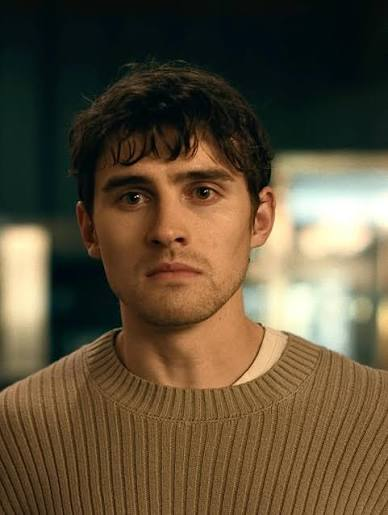
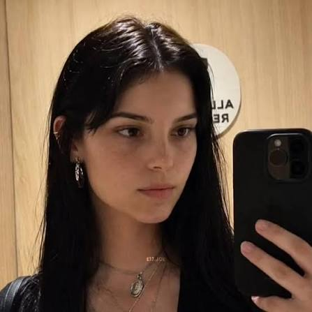

El Placer del Deseo
16/10/2026 - Cargo con una tristeza constante y una inseguridad que no me dejan levantar la mirada desde que murió mi abuela y me quedé solo en aquella vieja casa. Llevo años queriendo confesarle a Nikki Freeman que pienso en ella todo el tiempo, pero el miedo a perder su amistad me ha impedido hacerlo. Desesperado por conseguir su amor, entré en aquella tienda New Age, compré el Sauce de un Solo Deseo y rompí la rama pidiendo que Nikki me amara más que a nadie en el mundo. En ese momento, no me importó que mi deseo pudiera arrebatarle su libertad; solo quería llenar el vacío que sentía y conseguir el amor que tanto anhelaba.

Baron «Bear» Bailey
Protagonista
Al principio creí que mi fantasía se había cumplido, pero pronto todo se convirtió en una pesadilla claustrofóbica. Me di cuenta de que Nikki ya no tenía control sobre sí misma y que actuaba bajo una compulsión violenta que la llevó a mutilarse el rostro mientras gritaba que esa no era ella. Sin embargo, en lugar de detenerme y reconocer su sufrimiento, mi egoísmo me ganó: ignoré su dolor, oculté la verdad y me acosté con ella. Me convertí en cómplice de una situación que terminó escapando de mi control. El caos se desató cuando Nikki apareció inesperadamente, rompió la ventanilla del automóvil y asesinó a Sarah delante de mis ojos. Desesperado por revertir lo que había provocado, recurrí a Ian en busca de ayuda, pero él pidió impulsivamente mil millones de dólares como deseo, sin comprender las consecuencias. Más tarde, cuando llegó a mi casa para confrontar la situación, Nikki lo interrumpió y le disparó en la cabeza. Consumido por la culpa y el terror, comprendí que aquella pesadilla debía terminar. Me encerré en el baño y tomé una sobredosis de oxicodona, pero después me arrepentí e intenté revertir lo sucedido. Sin embargo, Nikki me sometió a su voluntad y terminé experimentando la misma pérdida de autonomía que yo había provocado en ella. Al final, quedé atrapado en las consecuencias de mi propio egoísmo, víctima de una fantasía que se había convertido en una auténtica pesadilla.
16/10/2026 - Durante semanas, permanecí atrapada en el fondo de mi propia mente, consciente de lo que ocurría, pero incapaz de controlar mi cuerpo mientras una fuerza ajena dominaba mis acciones. Sentía que había perdido mi autonomía y que alguien más estaba utilizando mi cuerpo para satisfacer una obsesión que no me pertenecía. A medida que la situación empeoraba, fui testigo de actos cada vez más violentos y aterradores, sin poder detenerlos. Mi propia identidad quedó sepultada bajo aquella compulsión, mientras mi vida y la de quienes me rodeaban se convertían en una pesadilla.

Nikki Freeman
CoProtagonista
Cuando Bear murió, el hechizo finalmente se rompió y recuperé el control de mí misma. Desperté de golpe, tirada en el suelo y rodeada de cadáveres, sin poder asimilar lo que había sucedido. Poco a poco, comprendí horrorizada las consecuencias de los actos cometidos mientras permanecía prisionera en mi propia mente. Ahora debo enfrentar las consecuencias de aquella tragedia y vivir con el trauma de haber perdido el control de mi cuerpo y de mi voluntad. Bear había deseado poseer mi amor sin comprender que el amor verdadero no puede imponerse. Si alguna vez ese Sauce de un Solo Deseo cae en tus manos, ten cuidado con lo que deseas, porque podrías destruir aquello que más anhelas conseguir.
Síguenos en nuestras redes sociales: